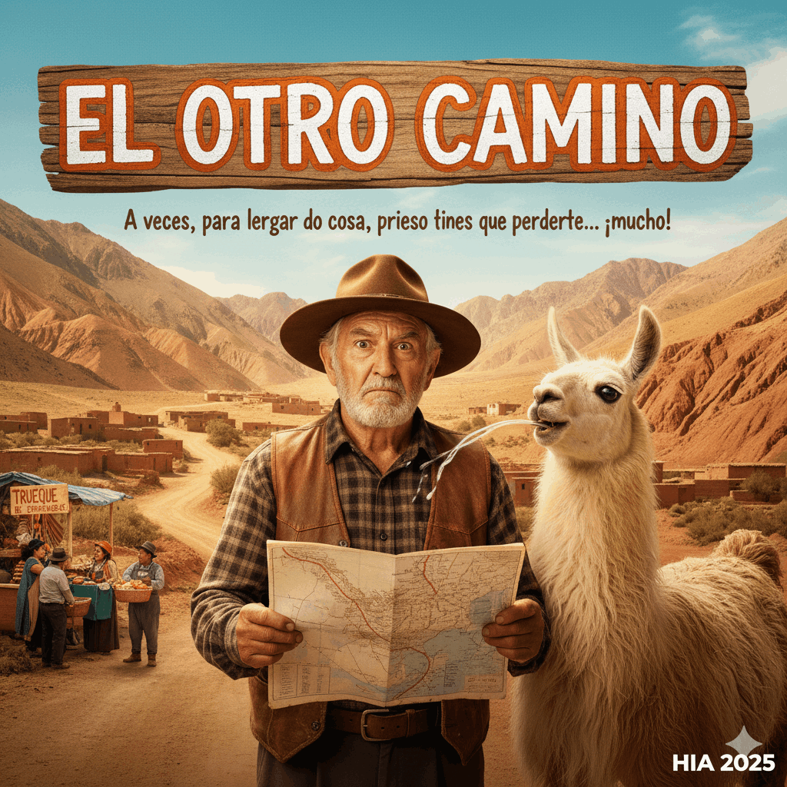

Don Pascual, un hombre de pocas pulgas y mucha costumbre, emprende el viaje de regreso a su pago en el Norte, convencido de que 'los GPS son inventos del demonio'. Armado solo con un mapa de 1985 y su terquedad, toma el que él llama 'el atajo escénico'. ¿El resultado? Una semana de desvíos, una amistad dudosa con una llama que no para de escupirle, y un descubrimiento accidental que lo lleva a un pueblo donde el Wi-Fi es un mito y la única moneda de cambio es el trueque de empanadas. 'El Otro Camino' es una comedia de errores y caminos equivocados que demuestra que, a veces, para llegar a casa, primero tienes que perderte... ¡mucho!"